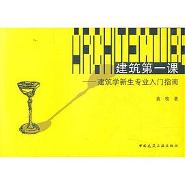

《建筑第一课 建筑学新生专业入门指南》

8.8
★★★★★
豆瓣评分 · 35,000 人评价
未标记阅读状态
清华大学建筑学博士袁牧写给专业新生的清醒入门指南。不仅系统梳理建筑学核心知识树与学习路径，更直击心智模型与动手实操，被建筑学子誉为“绝世武功秘笈的目录”。
总体观点
建筑学既非纯粹自嗨的造型艺术，亦非机械枯燥的工程算量，而是一门以三维空间组织人类活动、权衡技术规范与社会诉求的综合解决问题学科。
初学建筑最致命的陷阱是沉迷于酷炫效果图的二维幻象，真正的专业素养在于建立对人体物理尺度、结构材料逻辑与场地环境的敏感空间直觉。
学习建筑是一场长期的心智磨炼与手脑并用实验。唯有走出画室象牙塔、在手工模型中反复推敲实虚尺度、深入街头测绘真实肌理，才能跨入营造之门。
核心观点
-
1. 建筑师的核心能力是“空间组织”，而非视觉作画
漂亮的渲染图是骗人的表皮，能用合理的平面流线、空间高差与光影解决人的使用需求才是硬功夫。
新手常热衷在电脑里拉出扭曲夸张的建筑外壳，一排剖面图却发现走廊逼仄昏暗无采光，彻底颠倒了空间主次。 -
2. 建筑设计是“带着铁镣跳舞”的系统解题过程
消防规范、容积率、日照红线与造价成本不是创作的敌人，而是激发高水平建筑创意的严密边界。
面对严格的退界距离与疏散楼梯规范限制，高手能将呆板的室外逃生楼梯转化为建筑立面上极具雕塑感的观景悬挑步道。 -
3. 动手切实体模型，是检验真实空间尺度最诚实的工具
电脑屏幕会造成虚假的尺度安全感，用瓦楞纸和泡沫板亲手搭建1:50模型，所有比例硬伤都无所遁形。
在图纸上感觉很漂亮的深挑檐，用手工模型一摆，立刻发现其阴影将底层入口压抑得如同地下室，从而及时修正进深。 -
4. 手掌和脚步是建筑师最基础的身体量尺
必须把15厘米踏步、90厘米扶手、2.8米层高刻进身体肌肉记忆，失去人体尺度的设计只是巨型垃圾雕塑。
随身携带一把小卷尺去丈量星巴克的吧台、图书馆的过道和老洋房的楼梯，在触摸中把抽象数字转化为真实身体感知。 -
5. 建立金字塔式的经典阅读图谱，避免碎片化摄入
刷设计网站的精美图片只能带来审美疲劳，唯有啃通建筑通史、空间理论与结构通识经典，才能筑牢专业底盘。
在做第一个茶室方案前，精读芦原义信《外部空间设计》与柯布西耶《走向新建筑》，理解实虚收放的核心心法。
树状思维导图
全书思维导图 · 知识脉络树
已复制思维导图大纲到剪贴板！
全书结构
-
第一部分 心态上的准备
击碎对建筑师盲目浪漫化的职业幻想，树立理性务实、拥抱挫折与告别无序熬夜的专业心智模型。
劝诫新生戒除赶图前夕通宵达旦、白天浑浑噩噩的恶性循环，建立科学规划构思节点与严谨推敲的健康职业作息。 -
第二部分 基础知识
全景梳理建筑学科知识体系，筑牢工程制图、透视投影、结构荷载与建筑物理环境的基本底座。
通过平立剖三图联动的徒手墨线抄绘训练，彻底打通眼手脑对应关系，学会从平面线条直接在脑中构想三维骨架。 -
第三部分 专业路线
拆解五年制本科教学螺旋上升的培养逻辑，指引从九宫格空间构成到复杂公共建筑设计的进阶脉络。
详述二年级从无功能“纯空间限定”迈向“带场地条件的小公厕/咖啡厅”真实设计时的破题思维跃迁。 -
第四部分 实践建筑
实战传授设计草图推敲、基地调研踏勘、物理工作模型试错与向评委答辩评图的关键核心技能。
示范如何拿着速写本到老街区进行实地测绘与人群活动观察，从阳光朝向和行人抄近路的路径中提取方案生成逻辑。 -
第五部分 基本书目
搭建建筑学人一生的经典阅读基石，系统推荐理论、历史、构造及跨学科扩展的权威书单。
系统评述彭一刚《中国古典园林分析》、罗西《城市建筑学》等传世名著，指出每本书适合精读的最佳年级与阶段。